| < Back | Wolf Creek Avalanche School AIARE 1 |
| 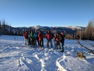 |
| The whole group after some beacon search drills. |
| 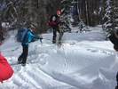 |
| Learning how to ski cut and observe signs of instability. |
| 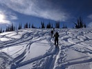 |
| Climbing up to Lobo Peak. |
| 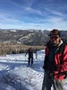 |
| Nearing the top of our climb to Lobo Peak. |
| 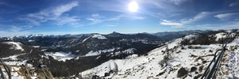 |
| From Lobo Peak, overlooking Wolf Creek resort and some avalanche terrain in the south San Juans. |
| 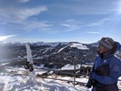 |
| Sandy talking about some avalanche terrain behind her. |
| 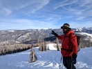 |
| Jasper explaining some details before our beacon search drill. |
| 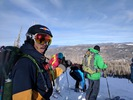 |
| About to ride back down, a nice little plus of having come up for training! Also, you can't really hang loose with mittens. |
| 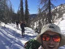 |
| Climbing up to Lobo Saddle. |
| 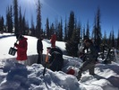 |
| Digging a snow pit. |
| 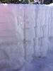 |
| Finding snowpack layers in the pit wall. |
| 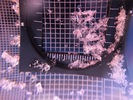 |
| Faceted crystals from the lower layers of the snowpack; they don't bond together, so create a persistent weak layer for denser slabs to form on top and slide to form a particularly deadly type of avalanche. |
| 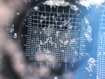 |
| Rounded crystals from the denser top layer of the snowpack; these bond together more easily to form the cohesive top layer of the Persistent Slab avalanche problem, forming the cracking and sliding seen in those types of avalanches. |
| 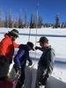 |
| Cutting a column for a compression test. |
| 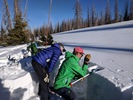 |
| Performing the Extended Column Test. |
{kind=link}